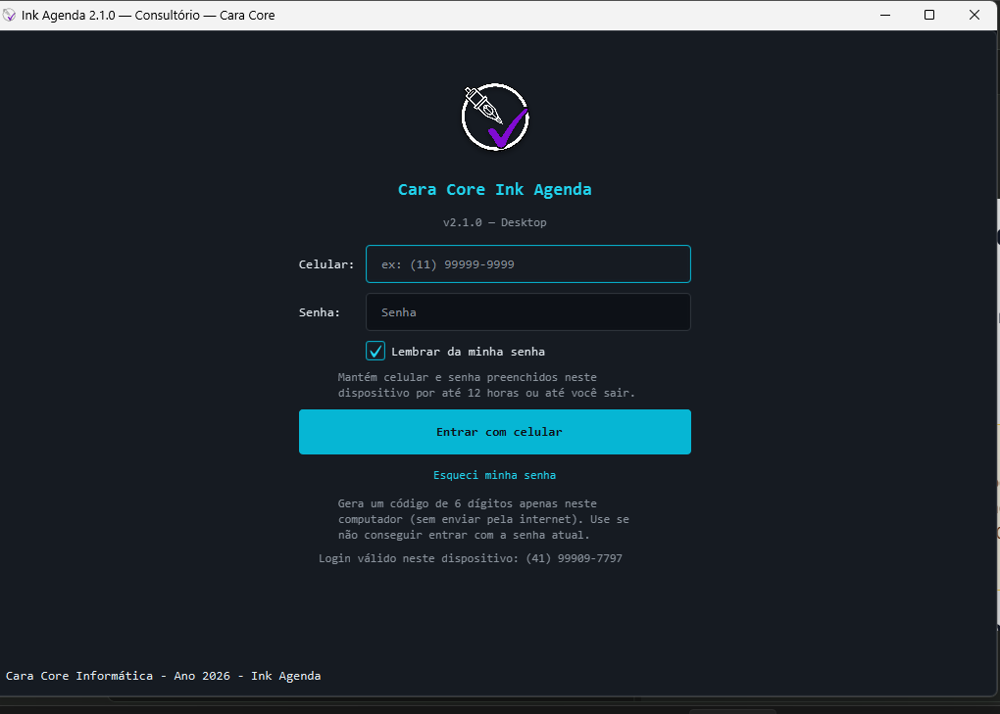
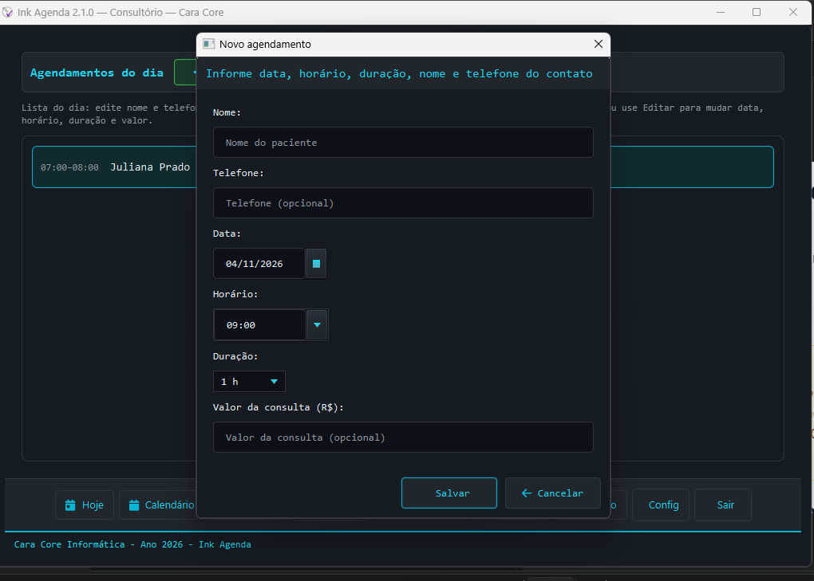
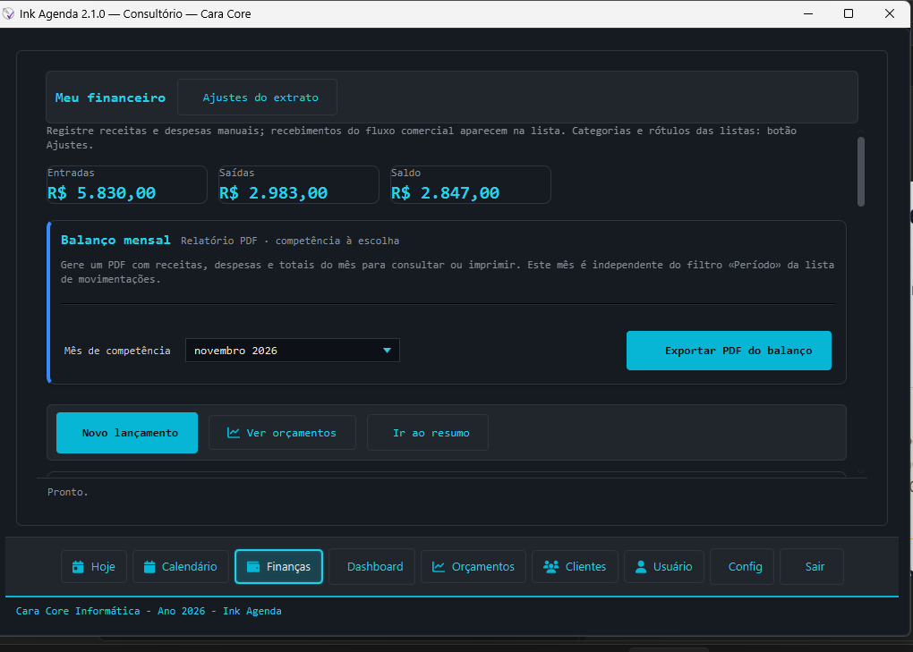

Agenda com horário, duração e valor
Consultas com o paciente, data, horário, duração, valor e situação de pagamento.
Windows 10/11 e Linux · v2.2.1 · dados no seu computador
Consultas, pacientes, orçamentos e financeiro em um só lugar — com acessos separados para a equipe. Se a internet cair, você continua atendendo: tudo fica no computador do consultório, sem conta em nenhum site. O backup protegido pela sua senha fica com você.
Quatro tarefas do dia a dia e o trabalho em equipe, em um único aplicativo, com os dados no seu computador.
Consultas com o paciente, data, horário, duração, valor e situação de pagamento.
Cadastro de pacientes e orçamentos vinculados ao atendimento.
Entradas, saídas e saldo por período, sem planilha paralela.
Faturamento e médias por período para acompanhar o mês.
Cada pessoa entra com o próprio celular e senha. O perfil Agenda cuida do dia e dos pacientes; o Financeiro cuida do caixa; o responsável vê tudo.
Do agendamento da consulta, abra a conversa com o texto pronto para confirmar, remarcar ou alinhar detalhes. Você confere e envia.
Três telas da versão Odontologia & Saúde. Capturas da edição Windows v2.2.1.

Versão Odontologia & Saúde: destaque turquesa, título Consultório e login local com celular e senha.

Nome do paciente e valor da consulta no formulário de novo agendamento.

Entradas, saídas e saldo por período; orçamentos ligados ao atendimento.
Imprevisto não avisa. Quando a agenda depende de um serviço externo, o problema dele vira o seu. Aqui, agenda, pacientes e caixa ficam no computador do consultório: se a conexão falha, o dia segue. Se o computador falha, o backup que você guardou fora dele devolve o que estava salvo.
LGPD: esses recursos apoiam o seu dever de proteger dados pessoais. A conformidade depende também dos seus processos e do uso do sistema; o Ink não substitui essa responsabilidade. Ver como funciona
Um plano único para o seu consultório, com suporte, correções e novas versões incluídas.
Assinatura mensal
R$ 79,90/mês
O Ink Agenda completo para o seu consultório, com suporte da Cara Core, correções de bug e novas versões incluídas.
Assinatura mensal por instalação, contratada pelo canal de atendimento da Cara Core.
Baixe a versão para Windows ou Linux, faça o primeiro acesso e veja se o fluxo cabe na rotina do seu consultório. Se algo não fechar, escreva para o canal da loja.